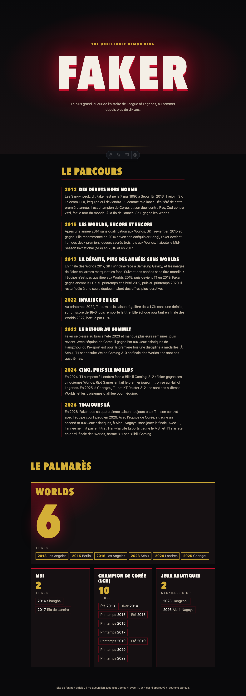
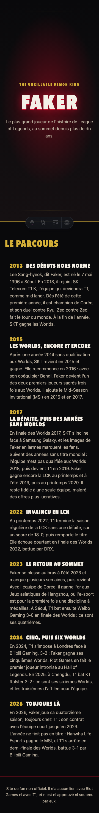
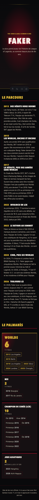

Le Palmarès
Le visiteur lisait l'histoire de Faker sans voir d'un coup d'œil ce qu'il a gagné. Il voit maintenant ses trophées, avec les 6 Worlds en grand, puis les MSI, la LCK et les Jeux asiatiques.
Décision attendue
Valider deux choix de contenu : l'or 2026 aux Jeux asiatiques, compté alors que Faker n'a pas joué la finale, et les villes ajoutées. Puis merger.
Risque
Faible
Avant / après
Ordinateur


Téléphone (360 px)


Ce qui change
- La Section « Le Palmarès » s'affiche juste après le Parcours
- Les Worlds sont en tête, en grand : 6 titres, de 2013 à 2025
- Puis 2 MSI, 10 titres de champion de Corée (LCK) et 2 médailles d'or aux Jeux asiatiques
- Chaque total se compte à partir des années : il ne peut pas être faux
- Une année fausse ou une catégorie oubliée bloque la mise en ligne
Fiabilité
Tests53 tests passent, dont 31 nouveaux sur le Palmarès
ChecksPassés sur cette version (0547671)
Critères7 sur 7 prouvés (voir l'annexe)
Tests existantsAucun supprimé ni modifié
RelectureDeux tours de relecture indépendante. 3 remarques corrigées : catégorie oubliée, saison mal placée, contradiction avec le Parcours sur 2026
RisqueSection ajoutée à part, avec ses propres fichiers. Rien d'existant ne change de comportement. Facile à retirer.
Choix effectués
Le ticket ne citait que l'or aux Jeux asiatiques 2023. En vérifiant, on a trouvé un second or en 2026, à Aichi-Nagoya : Faker était dans l'équipe, sans jouer la finale. On l'a compté, car le ticket demandait des résultats à jour. L'autre option était de s'en tenir à 2023. Pour rester cohérent, une phrase du Parcours 2026 cite aussi cette médaille. Autre choix : la LCK affiche la saison (printemps, été, hiver), car Faker a gagné deux fois en 2015 et en 2019. Enfin, chaque victoire internationale porte sa ville, comme un repère.
Pour l'essayer
Lancez « npm run dev », ouvrez la page et descendez sous le Parcours : les Worlds sont en grand, puis MSI, LCK et Jeux asiatiques. Réduisez la fenêtre à la largeur d'un téléphone : rien ne déborde.
Annexe
Les critères du ticket
Pour chaque critère d'acceptation, le test ou la capture qui le prouve.
| État | Critère |
|---|---|
| Prouvé | La Section Palmarès apparaît après le Parcours s'il existe, sinon après l'En-tête, avec son propre titre. Test : la Section suit le Parcours dans la page, avec son titre « Le Palmarès » |
| Prouvé | L'ordre est le suivant : Worlds (mis en avant visuellement), MSI, LCK, Jeux asiatiques. Test : les quatre catégories sont dans cet ordre, et seuls les Worlds sont mis en avant. Captures ordinateur et téléphone |
| Prouvé | Chaque catégorie affiche ses années et son total, et le total est calculé à partir des années, jamais saisi à la main. Test : chaque total (6, 2, 10, 2) égale le nombre d'années affichées. Test : un total écrit à la main est refusé |
| Prouvé | Les données sont validées par un schéma : une année invalide ou une catégorie inconnue fait échouer le build. Tests : année avant 2013, en texte ou non entière, catégorie inconnue, refusées. Essai à la main : la mise en ligne échoue |
| Prouvé | Les résultats ont été vérifiés, et la source utilisée est citée dans la pull request. Vérifiés le 15 novembre 2026 sur Wikipédia, Sheep Esports, Inven Global et Korea JoongAng Daily. Sources citées dans la pull request |
| Prouvé | Les chiffres finaux sont présents dans le HTML, même sans JavaScript. Test : les totaux sont lus dans la page fabriquée, qui ne contient aucun script pour le Palmarès |
| Prouvé | Un test sur la page rendue vérifie l'ordre des catégories, les totaux et les années. Test : la page complète est fabriquée puis lue : ordre, totaux et années sont vérifiés |
Les fichiers touchés
13 fichiers : 9 créés, 4 modifiés.
| Statut | Fichier | Lignes |
|---|---|---|
| Créé | src/components/Palmares.astro Affiche la Section Palmarès | +147 −0 |
| Créé | src/content/palmares.yaml Les victoires de Faker par catégorie, avec année, saison et ville | +51 −0 |
| Créé | src/data/charger-palmares.ts | +27 −0 |
| Créé | src/data/palmares-schema.ts Les règles que les victoires doivent respecter, sinon la mise en ligne échoue | +62 −0 |
| Créé | src/data/palmares.ts Range les catégories dans l'ordre et compte les totaux | +36 −0 |
| Créé | tests/charger-palmares.test.ts | +34 −0 |
| Créé | tests/ordonner-palmares.test.ts | +45 −0 |
| Créé | tests/palmares-schema.test.ts | +55 −0 |
| Créé | tests/palmares.test.ts Vérifie le Palmarès dans la page finale | +77 −0 |
| Modifié | src/content.config.ts | +8 −1 |
| Modifié | src/content/parcours.yaml Le Parcours 2026 cite l'or aux Jeux asiatiques | +4 −2 |
| Modifié | src/data/site.ts | +30 −1 |
| Modifié | src/pages/index.astro | +2 −0 |